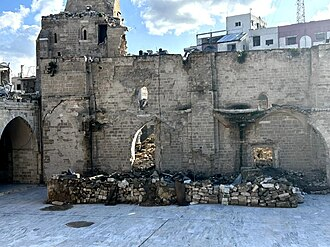

简介
La grande mosquée de Gaza était une ancienne église du XIIe siècle devenue la plus grande et ancienne mosquée de la ville de Gaza, dans la bande de Gaza. Elle est en grande partie détruite par un bombardement israélien le 7 décembre 2023 au cours de la guerre à Gaza depuis 2023.
الجامع العمري الكبير في غزة هو المسجد الأكبر والأقدم في قطاع غزة، ويقع في مدينة غزة القديمة، وقد أُطلق عليه هذا الاسم تكريماً للخليفة عمر بن الخطاب صاحب الفتوحات، وبالكبير لأنه أكبر جامع في غزة. كان موقع المسجد الحالي معبداً فلسطينياً قديماً، ثم حوَّله البيزنطيون إلى كنيسة في القرن الخامس ميلادي، وبعد الفتح الإسلامي في القرن السابع حوَّله المسلمون إلى مسجد. وقد وصفه الرحالة والجغرافي المسلم ابن بطوطة بـ«المسجد الجميل» في القرن العاشر الميلادي. وفي عام 1033م ضرب زلزال المنطقة فأدى إلى سقوط مئذنة الجامع العمري الكبير.
The Great Mosque of Gaza, also known as the Great Omari Mosque, is a mosque in a ruinous state, located in Gaza City, in the State of Palestine. Prior to its 2023 partial destruction, it was the largest and oldest mosque in the Gaza Strip.
Gazze Ulu Camii aynı zamanda Büyük Ömer Camii olarak da bilinmekte olan, Gazze'nin eski şehir kısmında yer alan, Gazze Şeridi'ndeki en büyük ve en eski camidir.
Masjid Raya Gaza juga dikenal sebagai Masjid Omari Raya adalah masjid yang terbesar dan tertua di Jalur Gaza, yang terletak di kota tua Gaza
مسجد عمری الکبیر دولت فلسطین کا ایک مسجد جو غزہ پٹی میں واقع ہے۔
Die Große Moschee von Gaza oder auch die Große Omar-Moschee ist die größte und eine der ältesten Moscheen im Gazastreifen. Sie ist eine ehemalige christliche Kirche und lag im Daradsch-Viertel im Zentrum der Altstadt von Gaza am Ende der Omar-Mukhtar-Straße. Sie wurde 2023 von der israelischen Armee bei einem Luftangriff im Rahmen der Operation „Eiserne Schwerter“ schwer beschädigt.
La Gran Mezquita de Gaza también conocida como la Gran Mezquita Omarí o Gran Mezquita de Omar era la mezquita más grande y más antigua de la Franja de Gaza, ubicada en la ciudad histórica de Gaza.
La Grande Moschea di Gaza, conosciuta come Grande Moschea Omari, è stata la moschea più grande e più antica di tutta Gaza, situata nella città vecchia. Il 7 dicembre 2023, durante la guerra di Gaza, è stata distrutta da un attacco aereo israeliano, lasciando la maggior parte della struttura crollata e il minareto parzialmente distrutto.
A Grande Mesquita de Gaza também conhecida como a Grande Mesquita Omari foi a maior e mais antiga mesquita da Faixa de Gaza, localizada no centro histórico de Gaza.
加薩大清真寺 位於巴勒斯坦加薩老城达拉杰區，佔地4,100平方米（44,000平方英尺），是加薩走廊規模最大且歷史最悠久的清真寺，建築材料主要為當地海岸的風成砂岩庫卡。此清真寺所在地最早可能是非利士人祭祀大袞的廟宇，當地傳說聖經人物參孫便埋葬於此。西元406年拜占庭帝國皇后歐多西亞在此建立了一座基督教堂，六世紀的聖地地圖馬達巴地圖上便有此教堂，七世紀伊斯蘭佔領此地後被轉為清真寺，為紀念穆斯林征服黎凡特時在位的哈里發欧麦尔·本·赫塔卜（為伊斯蘭教四大哈里发之一），此清真寺又名大奧馬里清真寺。
Великая мечеть, также известна как Большая мечеть Омара, — самая большая и одна из самых старых мечетей в секторе Газа.
Ang Dakilang Masjid ng Gaza, kilala rin bilang Dakilang Masjid ng Omari, ay isang masjid sa isang guhong kalagayan, na matatagpuan sa Lungsod Gaza, sa Estado ng Palestina. Bago ang bahagyang pagkawasak nito noong 2023, ito ang pinakamalaki at pinakamatandang masjid sa Piraso ng Gaza.
Marea Moschee din Gaza, cunoscută și sub numele de „Al-Masjid al-Umari al-Kabir”, „Marea Moschee Omari”, este cea mai veche și mai mare moschee din Fâșia Gaza și este situată în Orașul Vechi din Gaza.
在地图上
资料与链接
- Wikipédia — Français
- Wikipédia — العربية
- Wikipédia — English
- Wikipédia — Türkçe
- Wikipédia — Bahasa Indonesia
- Wikipédia — اردو
- Wikipédia — Deutsch
- Wikipédia — Español
- Wikipédia — Italiano
- Wikipédia — Português
- Wikipédia — 中文
- Wikipédia — 한국어
- Wikipédia — Русский
- Wikipédia — Filipino
- Wikipédia — Română
- Wikidata — Q739415
数据：维基数据（Wikidata，CC0），每3个月更新一次。年份是该建筑已知最早的建造年代：对于后来才成为清真寺的建筑（如圣索菲亚），则是原建筑的年代。照片：维基共享资源（Wikimedia Commons），作者和许可协议见每张照片的页面。